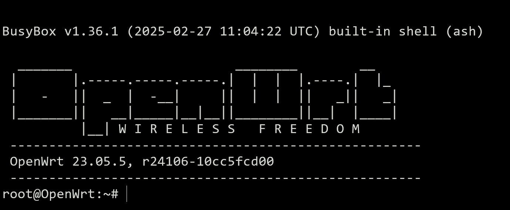
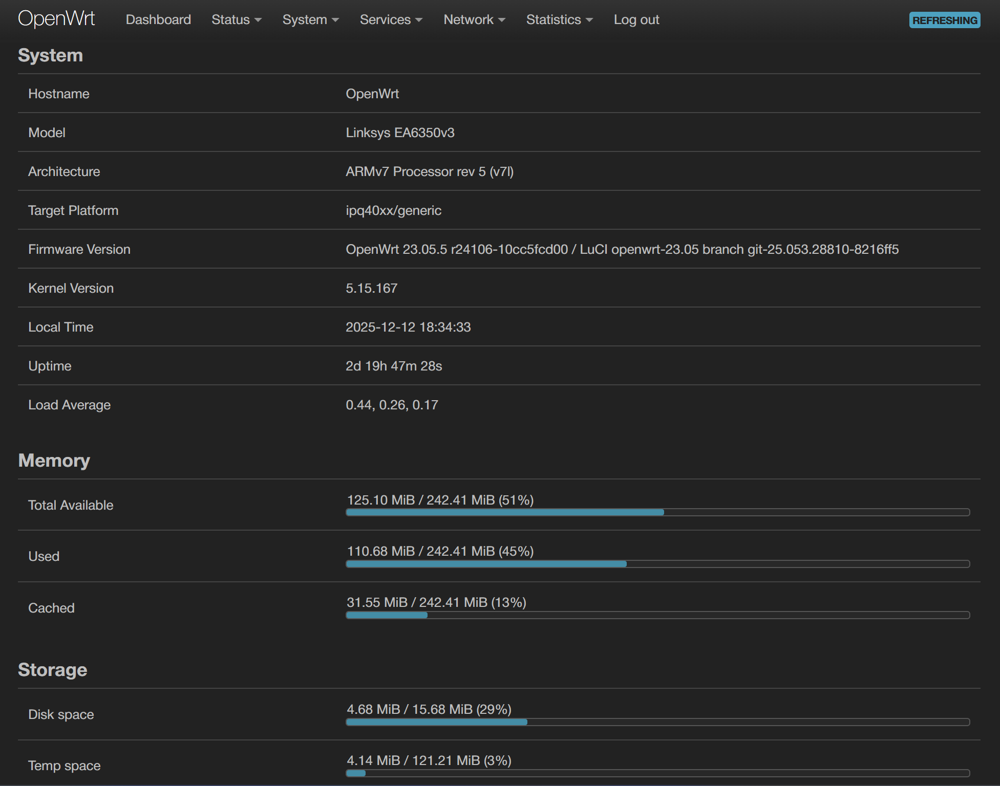
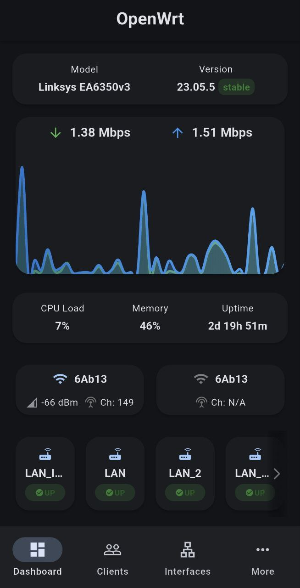

Libera tu Router con OpenWRT
Taller de instalacion por Cristian Giambruni
¿Qué es OpenWRT?
OpenWrt es un sistema operativo basado en Linux para dispositivos embebidos (routers, access points, etc).
Un router es como una PC (CPU, RAM, almacenamiento, etc)

Características principales
- Software libre (Código fuente accesible)
- Personalizable
- Seguro (Comunidad activa)
- Libre de publicidad
Componentes de OpenWRT
- Kernel Linux
- Paquetes de software (opkg)
- Interfaz de usuario: CLI (Command Line Interface) y GUI Web Opcional
- Hardware compatible (Ver listado)

¿Por qué usar OpenWRT?
- Reutilización de hardware obsoleto
- Seguridad (EOL routers)
- Capacidad de instalar software útil
- Capacidades empresariales para routers en un router hogareño
- Fácil administración
- Interface web (LuCI)
- Aplicación Movil (LuCI Mobile)
¿Qué podemos hacer con OpenWRT?
- Configurar el router como un router tradicional (DHCP, DNS, NAT, etc)
- Soporte a nuevas versiones de seguridad (WPA3, etc)
- Capacidades avanzadas de red:
- roaming WiFi (802.11r, 802.11k y 802.11v)
- VLANs y QoS
- Múltiples LANS
- Múltiples WANs (balanced, failover, etc)
- Multiple SSIDs
- Firewall avanzado
- Instalar apps en nuestro router:
- Adblock
- OpenVPN/Wireguard
- DDNS
- Cliente torrent
- Docker*
- Entre muchos otros Ver más
¿Cómo se ve OpenWRT? (CLI)
¿Cómo se ve OpenWRT? (GUI)
¿Cómo se ve OpenWRT? (GUI Mobile)
Instalación de OpenWRT
Antes de instalar OpenVPN en nuestro router debemos asegurarnos que el hardware sea compatible.
Un flasheo incorrecto puede dañar "brickear" nuestro router.